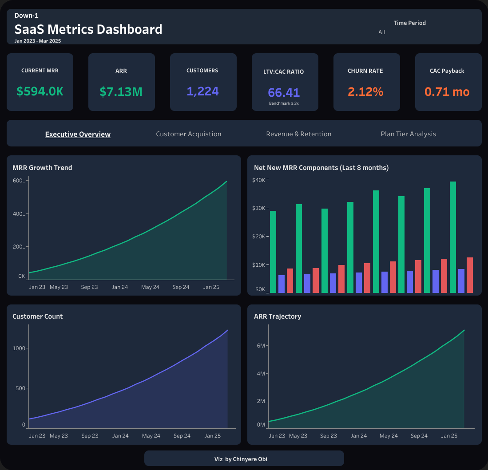

SaaS Business Health Dashboard
Revenue Analytics · Churn Analysis · Unit Economics · Tableau

The Challenge
A fast-growing SaaS company had revenue data in one source, customer data in another, and tier breakdowns coming in quarterly while overall metrics were monthly. No one could answer the questions that actually drive decisions — not because the data didn't exist, but because it lived in disconnected places at incompatible granularities.
Without a unified view, S&M budget was being allocated without efficiency data, tier unit economics were completely invisible, and the business had no clear answer to its most important question: where is growth actually coming from?
What I Built
A 4-tab Tableau dashboard that gives stakeholders a single source of truth for business health - covering revenue trajectory, acquisition efficiency, retention trends, and plan tier unit economics across 27 months of data. Every view was designed to make the answer visible in under 5 seconds.
Business Impact:
• MRR grew 14x from $42.6K to $593.9K - customer base scaled 10x (118 to 1,224)
• LTV:CAC ratio identified at 66.41x (industry benchmark: 3-5x) - exceptionally healthy unit economics
• Enterprise tier surfaced as 41% of revenue from just 9% of customers, with 0% churn
• Expansion MRR inflection point identified at month 18 - existing customers outspending new acquisition
• 90-day action plan delivered projecting $200-250K in new ARR
Technical Approach
The first challenge was structural: two datasets at different granularities had to be unified before any cross-tab analysis could work. Monthly overall metrics and quarterly tier breakdowns were standardized to a shared time dimension, then all 11 derived metrics were built as Tableau calculated fields to keep source data clean and logic auditable.
Dashboard Structure
- Executive Overview – KPI snapshot and health metrics
- Customer Acquisition – New customers by month, CAC vs LTV trend, Magic Number.
- Revenue & Retention – MRR composition, churn trend, ARPU over time, and LTV.
- Plan Tier Analysis – Starter vs. Pro vs. Enterprise with revenue, churn rate, ARPU.
- Overview Multi-tab Tableau dashboard analyzing 27 months of SaaS data across revenue growth, customer acquisition efficiency, retention trends, and plan tier unit economics; delivering a clear investment roadmap from raw metrics.
- Technologies Used Tableau, Calculated Fields, Data Blending, Excel / CSV, Multi-source Data Modeling
- Skills Demonstrated Dashboard design, business metrics analysis, unit economics, churn analysis, data storytelling, KPI framework design, strategic recommendations
- Business Impact Identified expansion MRR inflection point, surfaced Enterprise as 41% of revenue at 0% churn, delivered 90-day action plan projecting $200–250K in new ARR, modeled 12-month trajectory to $11.4M ARR